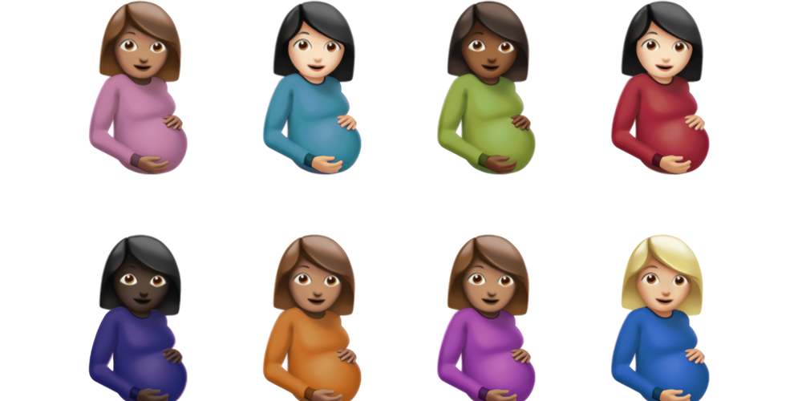

Nieuwste Album
Drake zijn nieuwtse album is nog maar net uit. Het album heet Certified Lover Boys. Het album kwam uit op 3 September 2021. Het album is uitgekomen onder het label van Drake genaamd OVO Sound en Replubic Records. Er staan veel feauteres op van andere artiesten maar liefst vijftien artiesten dit zijn ze: Lil Baby, Lil Durk, Giveon, Jay-Z, Travis Scott, Future, Young Thug, Yebba, 21 Savage, Project Pat, Tems, Ty Dolla Sign, Lil Wayne, Rick Ross, en als laatse Kid Cudi.
Het album heeft 21 nummer. Drake wilden eigelijk het album in januari uitbrengen, alleen door een knieblessure is dit uitgesteld omdat hij zijn energie wilde besteden aan zijn herstel. Drake zijn album is uitgebracht onder zijn eigen label genaamd OVO Sounds en door Frozen Moments Imprint. De cover is ontworpen door Damien Hirst. Hij kwam op het idee om 12 zwangere vrouwen als emotie als cover te doen.
